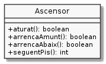

Exercici 04_18. Ascensor interactiu¶
Exercici 04_18. Ascensor interactiu¶
Context
Carpeta de lliurament:
04_18_ascensor_interactiu/Continguts relacionats: Accions d’un objecte
Com lliurar-lo: instruccions
[✓] Exercici amb autoavaluació
Enunciat
Aquest exercici torna a revisar l’ascensor que hem fet en exercicis anteriors. En aquesta ocasió ampliaràs els mètodes que ofereix l’ascensor de manera que aquest sigui més usable.
Afegeix al repertori de mètodes de Ascensor els següents:

Els mètodes aturat(), arrencaAbaix() i arrencaAmunt()
canviaran el moviment de l’ascensor a l’indicat, si no ho estava ja, i
retornaran true quan s’hagi produït el canvi.
Cal tenir en compte que, l’ascensor no podrà arrencar cap a munt o cap a baix si no estava aturat. En cas que se li demani, l’ascensor es quedarà amb el moviment que ja tenia.
El mètode seguentPis() permetrà fer passar l’ascensor al pis següent
segons el moviment. Per exemple, si està pujant i es troba al pis 1, en
demanar-li seguentPis() passarà al pis 2 i seguirà pujant.
Quan l’ascensor es troba a baix de tot baixant o a dalt del tot pujant, el
seguentPis() correspondrà, respectivament al pis 0 o al 9, i invertirà
el sentit del moviment. Per exemple, si es trobava al pis 10 pujant,
seguentPis() el coŀlocarà al pis 9 i baixant.
seguentPis() retornarà el nou pis.
seguentPis() no podrà canviar de pis si l’ascensor està aturat. En
aquest cas, retornarà el mateix pis.
La següent plantilla UsaAscensor permetrà exercitar algunes d’aquestes
noves funcionalitats.
1 2 3 4 5 6 7 8 9 10 11 12 13 14 15 16 17 18 19 20 21 22 23 24 25 26 27 28 29 30 31 32 33 34 35 | public class UsaAscensor {
public static int llegeixEnter() {
String resposta = Entrada.readLine();
if (! UtilString.esEnter(resposta)) {
return -2;
}
return Integer.parseInt(resposta);
}
public static void main(String[] args) {
Ascensor ascensor = new Ascensor();
System.out.println("Pis inicial");
ascensor.setPis(llegeixEnter());
System.out.printf("Inicialment l'ascensor està %s%n", ascensor.XXX);
// aturat a pujant
boolean resposta = ascensor.arrencaAmunt();
System.out.printf("En arrencar amunt l'ascensor respon %b i està %s%n",
resposta, ascensor.XXX);
// demanem que baixi sense aturar
resposta = ascensor.arrencaAbaix();
System.out.printf("En arrencar a baix l'ascensor respon %b i està %s%n",
resposta, ascensor.XXX);
// passem del pis indicat al la planta baixa
System.out.println("Anant a la planta baixa quan està " + ascensor.comEsta());
while (! ascensor.estaAbaix()) {
ascensor.XXX; // passa al següent pis
System.out.println("\t ara està "+ ascensor.XXX);
}
ascensor.aturat();
System.out.printf("Està %s. Final de trajecte!%n", ascensor.comEsta());
}
}
|
En completar-la, la següent execució funcionarà així:
$ java UsaAscensor
Pis inicial
7
Inicialment l'ascensor està aturat al pis 7
En arrencar amunt l'ascensor respon true i està pujant al pis 7
En arrencar a baix l'ascensor respon false i està pujant al pis 7
Anant a la planta baixa quan està pujant al pis 7
ara està pujant al pis 8
ara està pujant al pis 9
ara està pujant al pis 10
ara està baixant al pis 9
ara està baixant al pis 8
ara està baixant al pis 7
ara està baixant al pis 6
ara està baixant al pis 5
ara està baixant al pis 4
ara està baixant al pis 3
ara està baixant al pis 2
ara està baixant al pis 1
ara està baixant al pis 0
ara està baixant al pis -1
Està aturat al pis -1. Final de trajecte!
Fixa’t que, donat que està pujant, primer ha d’arribar a dalt del tot per poder anar a la planta baixa.